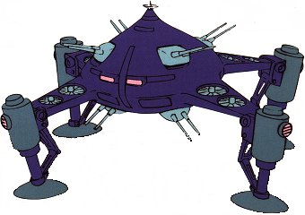

| MAX-03 Adzam Large Fire Support Land Use Zeon Mobile Armor |
|
|  | |
General and Technical Data |
|
|
Model number: MAX-03 Code name: Adzam Unit type: ground combat mobile armor Operator: Zeon Duchy Overall height: overall height 25.0 meters; overall width 55.9 meters Weight: empty weight unknown; max gross 2500.0 metric tons Construction: Titanium/Ceramic Composite Powerplant: Minovsky type ultracompact fusion reactor, output rated at 62000 kW Propulsion: 8 x VTOL rotor; Minovsky-craft compressor Performance: ? Fixed armaments: 4 x 2-barrel dorsal mega particle cannon; 4 x 2-barrel ventral mega particle cannon; 3 x 'leader,' electrical discharge weapon, delivers high voltage current over wide area |
|
| Technical and Historical Notes | |
|
The first successful "mobile armor" weapons platform fielded by the Zeon Duchy, the Adzam was designed for close-range suppression of multiple ground targets. Mobile armors are, in fact, closer to extremely mobile warships than mobile suits, and frequently have very little in the ways of a humanoid appearance.
The Adzam is powered by a large reactor and kept aloft via the recently-completed Minovsky-craft compressor, which provides a constant hover effect as long as power is provided. It is bolstered by eight turbines along its "leg" pylons for additional lift and control. In combat, it is intended to orbit around the target, hammering it with accurate mega particle salvos while also providing close-range support for friendly units.
This mobile armor is heavily armed and armored. Its eight double-barreled mega particle cannons can lay down 360-degree fire without trouble, and due to their placement, it has no blind spots. Furthermore, it is also equipped with three experimental "leader" weapons, which hover over a group of clustered targets, deliver two-dozen wires into the nearby ground, and pump high-voltage current into the "dome" created. Originally intened for use against tanks, it is also quite capable of reducing mobile suits to ashes.
|
 RPG quick stats sheet
RPG quick stats sheet | Weapons and Features | |
|
|
|